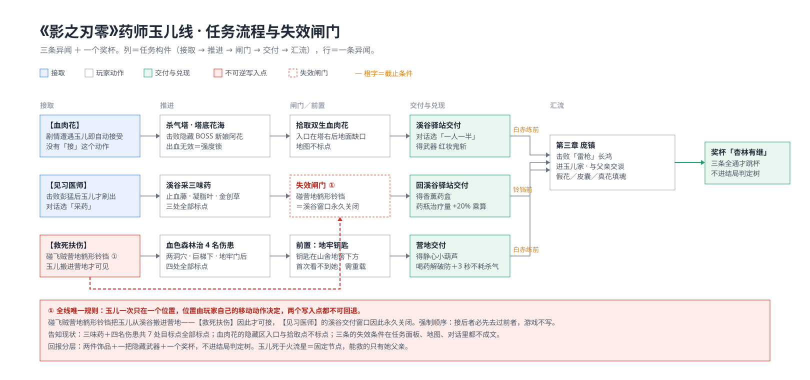

这次拆的是一条任务线：玉儿线包含三条支线任务（游戏内称「异闻」）加一个奖杯，横跨第一到第三章。前两个拆解用的是整款游戏的框架，适合分析稳定的系统。任务线的关键特点是它可能失效，即玩家的某个操作会让任务再也做不了。所以这里改用任务策划日常使用的八个角度来分析：目的、授予、结构字段、动线、状态读写、告知、兑现、失效。
| 视角 | 问的问题 | 产出物 |
|---|---|---|
| 1 目的 | 这条任务在这一章承担什么作用：教学、开启区域、补充叙事、投放奖励、调节节奏。删掉它会缺什么 | 一句话设计意图 |
| 2 授予 | 谁给任务，满足什么条件才给，玩家需不需要主动接取 | 触发条件与授予形式 |
| 3 结构字段 | 任务由哪些数据字段组成：目标数量、前置条件、后续任务、地图标点策略、任务日志文字 | 策划在数据表里填写的内容 |
| 4 动线 | 玩家从起点到终点的路线：是否经过主线必经的路，要往返几次，跨几章 | 空间走查 |
| 5 状态读写 | 任务会读取哪些游戏状态，会修改哪些状态（例如 NPC 的位置、区域状态），修改之后能否撤销 | 读写表 |
| 6 告知 | 玩家从哪个界面得知上面每条信息；信息缺口靠什么补，是环境提示、自己试错，还是查攻略 | 分级与缺口清单 |
| 7 兑现 | 奖励落在哪个系统：续航（回复类）、能力解锁、角色成长数值、成就、结局 | 奖励流 |
| 8 失效 | 哪些操作会让任务断掉，玩家能否察觉到断掉，补救要付出多大代价 | 失效面 |
第 3 和第 5 项是策划专有的内容，攻略通常不写。第 6 项把第 3、5 项里玩家看不到的状态，转换成玩家能看到的信息。大多数任务设计问题都出在第 6 项。玉儿线最值得看的地方在第 5 和第 6 项之间：任务修改的是 NPC 的位置，但任务面板上写不下这种信息。
三条支线任务共用一个奖杯。下表列出全部事实：
| 节点 | 在哪接 | 玩家做什么 | 交付 | 失效 | 兑现 |
|---|---|---|---|---|---|
| 〇 相遇 | 第一章「追兵」沿绳索攀下悬崖后，玉儿在溪谷营地 | 无。角色动机只有一句：她偷到药方，认为血肉之花能治好父亲的昏睡病 | — | — | 无 |
| 【血肉花】 | 剧情遇到玉儿时自动接受，没有对话选项 | 悲泣溪谷·杀气塔底层花海击败隐藏 BOSS（关键强敌）新娘阿花，拾取双生血肉花。入口在一层铃铛绕到塔右后的地面缺口，沿木桥滑下 | 回溪谷驿站，对话可选「一人一半」 | 在白赤练战斗开始前未交付，任务即断 | 奖励：武器「红妆鬼斩」和同名奖杯 |
| 【见习医师】 | 击败主线 BOSS「斧老大：彭猛」后，玉儿才会出现在驿站；对话时选「采药」 | 采集溪谷的三味药：止血藤在关押处出口下方的河道，凝脂叶在远眺龙柱处，过桥后贴着左墙跳上平台，金创草在龙柱龙头正对的道路上。三处都在地图上标了点 | 回溪谷驿站 | 碰到飞贼营地的鹤形铃铛时，玉儿被带走，交付入口消失 | 饰品「香薰药盒」：药瓶治疗量 +20%（乘算，即按倍率计算，区别于直接相加）；打磨后的「·改」版 +30% 并附带霸体（受击时不会中断动作） |
| 【救死扶伤】 | 血色森林飞贼营地的铃铛旁。第一次去见不到玉儿，要先传送到别的铃铛，再传送回来，她才会出现 | 救治 4 名伤患：亡命徒陷阱旁一大一小两个洞穴、悬崖山舍巨梯下方、营地上锁门的另一侧。第 4 人需要盗贼营地地牢钥匙，钥匙在山舍地窖下方。四处都在地图上标了点 | 回营地 | 在白赤练战斗开始前未交付，任务即断 | 饰品「静心小葫芦」：喝药时立即解除破防（防御被打破的状态），3 秒内不消耗杀气 |
| 尾段 | 第三章庞镇，击败「雷枪」长鸿后 | 进正前方的玉儿家，与其父交谈 | — | — | 奖杯「杏林有继」在此时出现，要求三条任务全部完成 |

这五项作用里，第 1 和第 3 项属于系统层面，第 2 和第 4 项属于节奏层面，第 5 项属于叙事层面。一条支线同时承担五项作用，这是它值得单独拆开看的原因。
| 形态 | 本线实例 | 玩家的动作 | 隐含条件 |
|---|---|---|---|
| 自动授予 | 【血肉花】 | 没有「接取」动作，剧情触发后直接写入任务日志 | 剧情进度 |
| BOSS 状态解锁 ＋ 对话选项 | 【见习医师】 | 要选对话里的「采药」 | 彭猛是否已死 |
| NPC 位置刷新 | 【救死扶伤】 | 传走再传回，她才出现 | 玉儿当前在哪个区域、交互对象是否已重载 |
三条都不需要玩家去任务板上主动找，接取的操作成本降到了零。代价也在同一个方向：三条能不能做，全由玩家看不见的状态决定，包括剧情进度、某个 BOSS 是否已死、自己刚才传送去了哪里。接取方便与告知缺失，是同一个设计决定的两面。
这一节最接近策划交付的文档：三条任务在数据上由哪些部分组成，每一部分填的是什么值。下表中的 flag 是游戏内部的标记位，记录某件事是否已经发生。
| 字段 | 血肉花 | 见习医师 | 救死扶伤 |
|---|---|---|---|
| 接取条件 | 剧情遭遇，自动写入日志 | flag(彭猛已死) && 选项「采药」 | NPC 可见(玉儿 @ 飞贼营地)，需一次传送重新加载 |
| 目标类型 | 战斗 ＋ 拾取 | 采集，计数 ×3 | 互动救治，计数 ×4 |
| 完成判定 | 交付道具给玉儿 | 交付 3 味药 | 4 名伤患全部处理 |
| 前置读取 | 能到达杀气塔的隐藏区 | 主线 BOSS 状态 | 能跨章传送；持有盗贼营地地牢钥匙（钥匙在山舍地窖下方） |
| 写入状态 | 武器红妆鬼斩、任务道具、尾段的 flag | 饰品香薰药盒；玉儿位置不变 | 饰品静心小葫芦 |
| 后续链 | 第三章庞镇·与父亲交谈 → 杏林有继 | 汇入杏林有继 | 汇入杏林有继 |
| 图钉策略（地图标点） | 隐藏区入口与拾取点都不标点 | 三味药全部标点 | 四名伤患全部标点 |
| 失效字段 | 白赤练战前未交付 | 玉儿离开溪谷驿站 | 白赤练战前未交付 |
三条任务用的是同一套字段，只有两处不同：接取条件的类型（剧情 flag、BOSS 的 flag、NPC 是否可见），以及目标的动作类型（战斗加拾取、采集、救治）。这类任务线的全部构件就是：一个计数、一个 flag、一个可见性判定。其余都是内容和文案。
把「失效字段」一栏单独拿出来看：三条里有一条是位置条件，两条是 BOSS 进度条件。三种条件混在一起，界面却用同一种方式展示，这是后面告知问题的根源。
这里的「钥匙」指能让任务继续推进的条件，分三种。
顺路程度：三味药都在溪谷探索时必经的路线上，基本不用专门绕路；四名伤患分散在血色森林的四个地点，其中一处需要先拿钥匙，所以要多往返一次，而这次往返不推进剧情。阿花在隐藏区，是全线唯一需要专门去找入口的地方。
| 钥匙类型 | 本线实例 | 它锁住什么 | 玩家的感知 |
|---|---|---|---|
| 道具钥匙 | 盗贼营地地牢钥匙（山舍地窖下方） | 第 4 名伤患 | 门锁着，需要找到钥匙才能开门。属于常见设计，玩家知道自己缺什么 |
| 强度钥匙 | 阿花战（出血无效，建议先升级武器，并备好凝锋丹） | 双生血肉花的获取 | 打不过就是打不过，失败的原因一目了然 |
| 位置钥匙 | 玉儿当前在哪个区域 | 【见习医师】能否交付、【救死扶伤】能否接取 | 完全看不到，而且开启一条任务与关闭另一条任务，是同一个动作 |
前两种是常见设计。第三种很少见：玩家的移动本身就是钥匙，走到某处开启一扇门的同时，会永久关上另一扇门。
| 当前状态 | 触发（不可逆） | 写入 | 同时关闭 |
|---|---|---|---|
| 玉儿在溪谷营地（只给动机） | 攀下悬崖的剧情遭遇 | 【血肉花】进日志 | — |
| 玉儿在溪谷驿站 | 击败主线 BOSS 彭猛 | 可接【见习医师】、可交付【血肉花】 | — |
| 玉儿在飞贼营地 | 触碰血色森林·飞贼营地的鹤形铃铛 | 可接【救死扶伤】 | 【见习医师】的交付入口永久消失 |
| 玉儿在庞镇（已故，皮囊） | 第三章剧情推进 | 尾段：与父亲交谈 → 奖杯 | 本线全部窗口 |
读取的状态有：彭猛是否存活、主线 BOSS 进度、玉儿当前在哪里、是否持有地牢钥匙。写入的状态有：三件装备、两条任务 flag、一个奖杯，以及「玉儿在哪个区域」这个变量。这条线真正改动的游戏世界状态，只有 NPC 的位置。
下表先列引导分级（G0 到 G4，信息越来越具体），再对照本线实际做到的程度。
| 级 | 内容 | 本线是否做到 |
|---|---|---|
| G0 | 只有 NPC 头顶的标记，交付后不再提示 | 白色支线（普通支线）的普遍情况 |
| G1 | 给地点（地图上标出目标位置） | 做到：三味药 ＋ 四名伤患共 7 处全部标点 |
| G2 | 给顺路（目标点压在主线必经的路线上） | 做到：溪谷采集段几乎全程顺路 |
| G3 | 给条件（需要几件、需要什么状态、被封住的区域需要哪类能力） | 部分做到：任务日志写明了数量，地图上标注了打不开的机关需要哪类「影之武装」；钥匙类和强度类条件都属于这一级 |
| G4 | 给时限与失效（写明截止节点，或给出「你真的要前进吗」这类提醒） | 为 0：三条任务的失效条件，在任务面板、地图、对话中都没有写明。全游戏只有两处类似的提示：进入幻影庄园开门时弹出「尚有未竟之事」，以及进入终局前的确认提示 |
| 缺口 | 具体表现 | 玩家的实际反应 |
|---|---|---|
| 路径引导 | 血肉花的隐藏区入口和拾取点都没有标点。「绕到塔右后的地面缺口，沿木桥滑下到塔底」这段路线，游戏里没有任何说明 | 三条里唯一要打隐藏 BOSS 的一条，恰好也是唯一没有标点的一条。找不到入口的玩家，会以为这条任务做不了 |
| 刷新条件 | 「要传送走再传送回来，才能见到她」，没有任何提示 | 以为这里没有人，然后离开 |
| 失效条件 | 三条任务的失效条件都没有写明 | 只能靠试错，或查攻略 |
| 状态代价 | 碰营地铃铛，等于把玉儿带走，同时关掉上一条任务的交付窗口，而这一切没有任何提示 | 玩家以为自己只是在开一个传送点 |
方向和路径要分开看。地图标点告诉玩家目标在哪里，但没有告诉玩家路径（从哪个缺口下去，要不要先拿钥匙），也没有告诉玩家状态（这个地点上的人现在还在不在）。本作在方向上给得很充分，问题全部出在状态上：地图能标出一个坐标，却标不出这个坐标上的人会不会离开。
这条线的失效属于位置类。失效由两个条件共同决定：NPC 的位置规则，以及玩家的移动。【救死扶伤】中「第一次到营地见不到玉儿」，与【见习医师】中「碰营地铃铛就断」，是同一条规则的两种表现。
后果：错过任一条，任务就断了，「杏林有继」本周目拿不到，只能读旧档或进入 NG+（通关后的新周目）。白金（拿全成就）玩家的做法是在每个区域的起点和终点各存一个手动存档。
为什么没有写出来：这类失效写进任务面板，就等于告诉玩家存在一个固定顺序。而这个顺序的设计意图，正是让玩家自己撞上。问题在于机制的形式与告知的形式对不上：由规则叠加产生的失效，在游戏界面里找不到对应的文字位置。问题不在文案偷懒，现有界面里根本没有可以写这类失效的地方。
| 层 | 内容 | 读数 |
|---|---|---|
| 叙事 | 庞镇的反转：那里的鲜红血肉花是假的，回家的玉儿已经是梦差（游戏中的操控者）操纵的皮囊。魂手里那朵真花把意识送回她的身体，父亲得救，并向她道别。玉儿会死于火流星，这是固定剧情，玩家救不了她 | 玩家的选择只影响最后救父亲这一步。叙事上是「救不了她」，机制上是「能不能救他」 |
| 战斗 | 没有追加战斗阶段（作为对照，沐小葵线集齐 5 条红丝带后，BOSS 会增加一个阶段） | 这条线没有改动战斗 |
| 成长 | 香薰药盒（治疗量 +20%，打磨后 +30% 并附带霸体）、静心小葫芦（喝药解除破防，3 秒内不消耗杀气）、红妆鬼斩 | 两件饰品都作用在喝药上，与第二节「投放续航类奖励」的目的一致 |
| 元层 | 奖杯「杏林有继」和「红妆鬼斩」 | 不影响结局判定。本作的结局由「湖心秘密」和「血脉觉醒（五处龙柱试炼）」两条关键支线的状态组合决定，玉儿线不在其中。它的完成度只能换来装备和成就 |
任务完成度的回报分三档：结局分支、装备与成就、叙事走向。玉儿线只拿第二档和第三档。它因此是一个很好的对照：一条做得很认真的支线，给了三件实物奖励和一个奖杯，却完全不影响结局。「完成度换结果」在这条线上走的是成长和成就这条路。
判断方法：如果把故事里的理由换掉，机制需不需要跟着改。需要改，就是「同构」（故事与机制互相解释）；不需要改，就是「借皮」（故事只是外壳）；按故事推断会做错，就是「冲突」。
| 节点 | 虚构层说法 | 系统层效果 | 判定 |
|---|---|---|---|
| 相遇 | 药师之女为父亲寻药 | 不写入日志 | 借皮（只起触发铺垫的作用） |
| 血肉花·自动接受 | 她偷到药方，急着抓药 | 任务无条件写入日志，玩家无需操作 | 同构：病情越急，越不该让玩家去找任务板 |
| 阿花与双生血肉花 | 药在杀气塔的隐藏区，被一个穿嫁衣的东西守着 | 一场高难度战斗（出血无效，所以必须换打法）、一把隐藏武器、一件任务道具 | 同构：「守着药」直接对应机制层的强度锁 |
| 见习医师·接取 | 彭猛死了，溪谷才安全到可以做生意 | 玉儿的出现条件是主线 BOSS 的状态 | 冲突：故事上说得通，但机制没有告知，玩家会以为这条线不存在 |
| 三味药 | 止血藤、凝脂叶、金创草，都是外伤药 | 采集 3 次，全部标点 | 同构：换成「找三块矿石」，药名和药效都要改 |
| 香薰药盒 | 「少女赠香包未果，便依亡母所授之法，制此药盒。'既是药具，便不会再被推辞了吧……'」 | 药瓶治疗量乘算 +20% | 同构程度最高：物品文字、数值类别、奖杯名「杏林有继」中的「继」字，三处都指向同一位母亲和同一门医术 |
| 救死扶伤·碰营地铃铛 | 她跟着营地一起搬，人不见时就是还没安顿好 | 同一个动作把她搬来，并永久关闭上一条任务的交付窗口 | 冲突程度最高：叙事上她随时都在，机制上她一次只能在一个位置，搬动由玩家自己触发，而且不作任何提示 |
| 庞镇·与父亲交谈 | 假花、皮囊、真花填魂 | 这一步才跳奖杯，且要求前两条已完成 | 同构：叙事的终点同时也是成就的终点 |
| 玉儿死于火流星 | 她一定死，玩家救不了她 | 无机制后果，只在救父亲那一步留出选择 | 同构（负面）：叙事层的无力感没有得到机制上的补偿 |
| 断线 | 战局不等人 | 任务永久不可用 ＋ 奖杯丢失 ＋ 只能读档或 NG+ | 冲突：故事给出了理由，机制却把触发条件藏在玩家自己的传送动作里 |
统计：同构 6 处（其中 1 处为负面）、借皮 1 处、冲突 3 处。整体设计可以成立。三处冲突来自同一个原因：玉儿只有一个位置，而位置的规则没有写进任务面板。